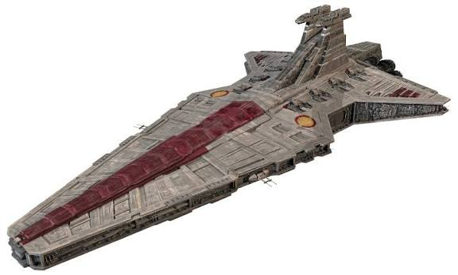

A Venator osztályú csillagromboló , más néven Venator osztályú cirkáló , a csillagromboló család több mint 1000 méter hosszú támadó cirkálója volt, amelyet a Galaktikus Köztársaság haditengerészete üzemeltetett . A Lira Wessex által tervezett, dupla ék alakú kialakítású és széleskörű küldetések végrehajtására alkalmas Venator volt az első csillagromboló osztály, amelyet a Kuat Drive Yards gyártott . Más néven Köztársasági cirkáló , Köztársasági támadó cirkáló vagy Köztársasági csillagromboló , egy sokoldalú hadihajó volt, amely képes volt harcoló hajóként szolgálni a hajók közötti tengeri hadviselésben és vadászhajóként is , miközben csapatszállító , teherhajóként, valamint ellátó és utántöltő hajóként is használták . Hadihajóként a Venatorokat erős terelőpajzsok védték , és számos fegyverrel rendelkeztek. A hajóhordozó szerepéhez egy nagy repülőfedélzet, valamint hangárok kerültek kialakításra, amelyek vadászgépek, csatahajók , űrsiklók , páncélozott járművek és egyéb járművek elhelyezésére szolgáltak, az elülső részben pedig további három dokkolóhely helyezkedett el. Legalább két változat létezett, a Venator I -osztály és a Venator II -osztály .
.jpeg)
Az űrhajó egy átalakított Corellian YT-1300 típusú könnyű teherűrhajó, Han Solo által csempészés céljára átalakítva, egyúttal a birodalmi erők kijátszására. A hajtóművet és a számítógépes irányítórendszert is módosították. A hajó a fénysebesség 1,5-szeresével képes haladni, azonban nem 100%-osan üzembiztos. A repült idő kétszeresét igényli a karbantartása. A fénysebesség alatti repülésre Girodyne hajtóművek szolgálnak, amik fúziós reakciót alkalmaznak. Ez a légkörben való repülés során 1050 km/h sebességet tesz lehetővé. A hosszabb utazásokra (és nagyobb sebességre a hiperűrön keresztül való utazásra) az Isu-Sim SSPO5 hiperhajtóművet alkalmazza. A számos módosítás és fejlesztés után 0.5 osztályú hiperhajtóműnek számít (a kisebb szám gyorsabb hajtóművet jelent). A csillagrombolók általában 2.0 osztályúak, így sebességben nem jelentenek veszélyt az Ezeréves Sólyomra a hiperűrben. A hajó hagyományos fegyverzetét Lando Calrissian kicserélte négycsövű lézerfegyverekre, amik a hajó alján és tetején helyezkednek el. Solo ezek teljesítményét megnövelte az energiakristályok segítségével. Ezzel egy TIE-vadász egyetlen lövéssel megsemmisíthető. A fegyver a lövegtoronyból vagy a pilótafülkéből is irányítható. A pilótafülkéből való célzás pontatlanabb találatot eredményez.